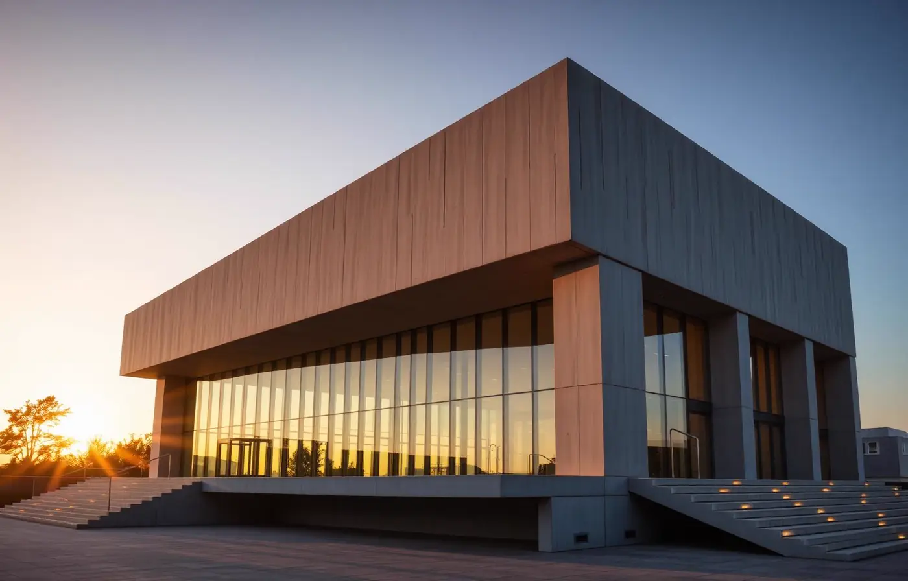
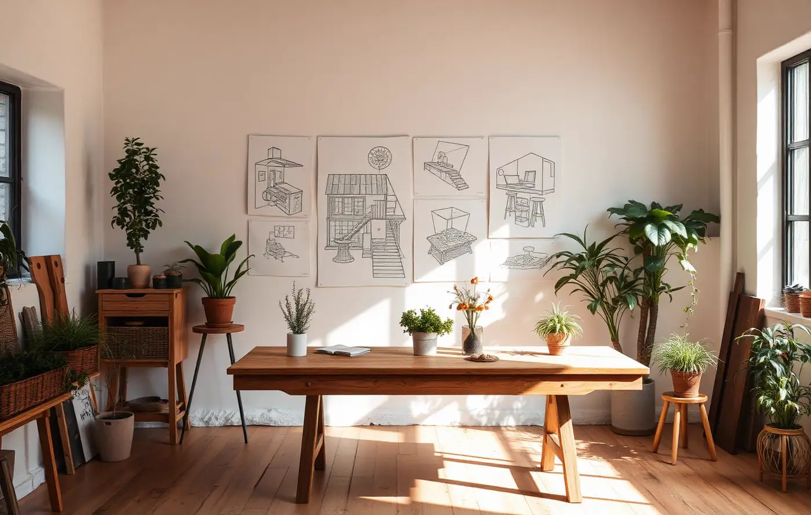
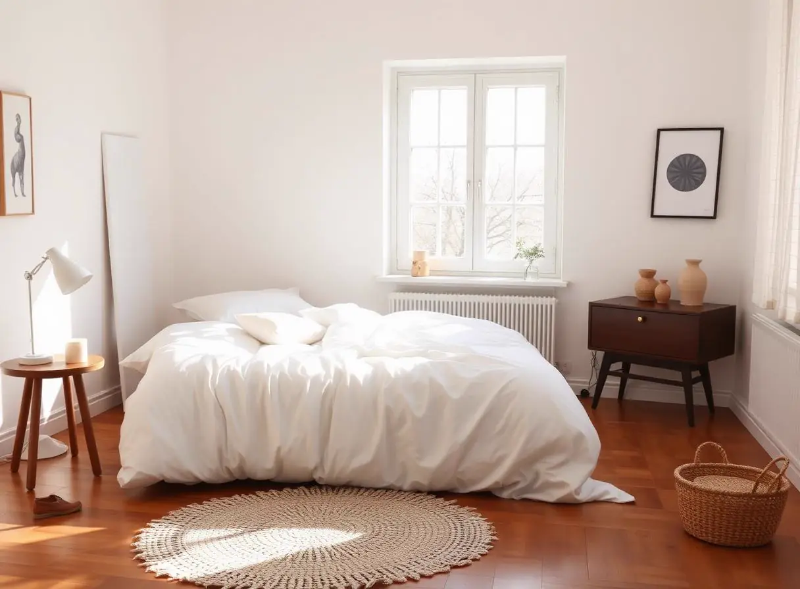
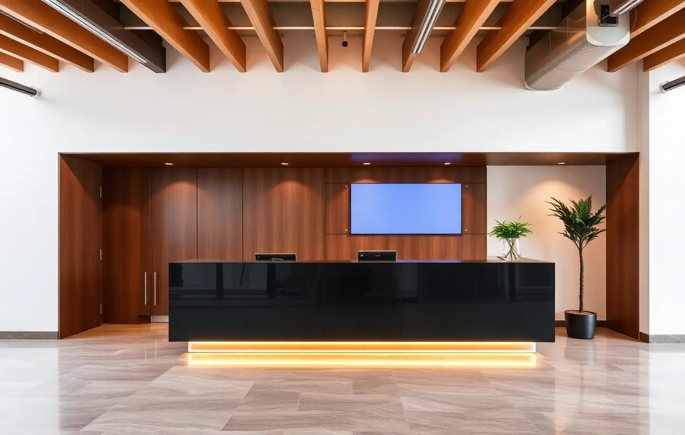

We believe architecture is a slow art. Every project begins with the site — its light, its stories, the way people already move through it — and ends with a space that feels as if it was always meant to be there. Over the past decade we have shaped homes, hotels, workplaces and public rooms in fifteen cities.
Ground-up residences, cultural buildings and adaptive re-use.
→Considered interiors for homes, hotels and workplaces.
→Neighbourhood-scale strategy grounded in local rhythm.
→Gardens, courtyards and thresholds between inside and out.
→Bespoke pieces designed for the rooms we build.
→Creative direction, site scouting and feasibility studies.
→Projects delivered
Cities on 3 continents
Awards received
Studio in practice
We walk the site, listen to the client, and gather the story of the place.
Sketches become models. Every material is chosen by hand.
Technical drawings and prototypes ensure nothing is left to chance.
We remain on site through the last coat of paint.

